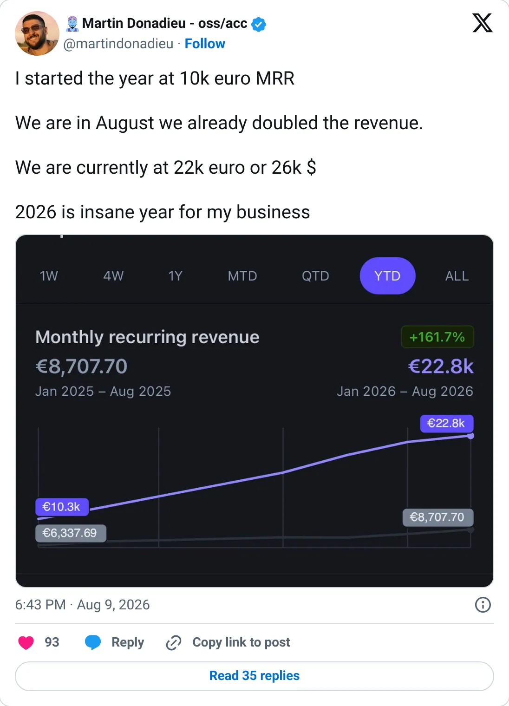
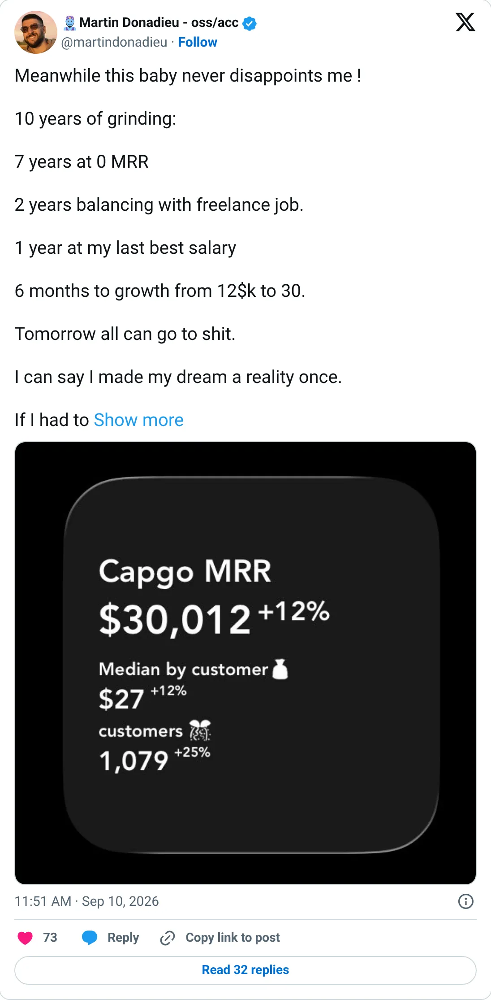
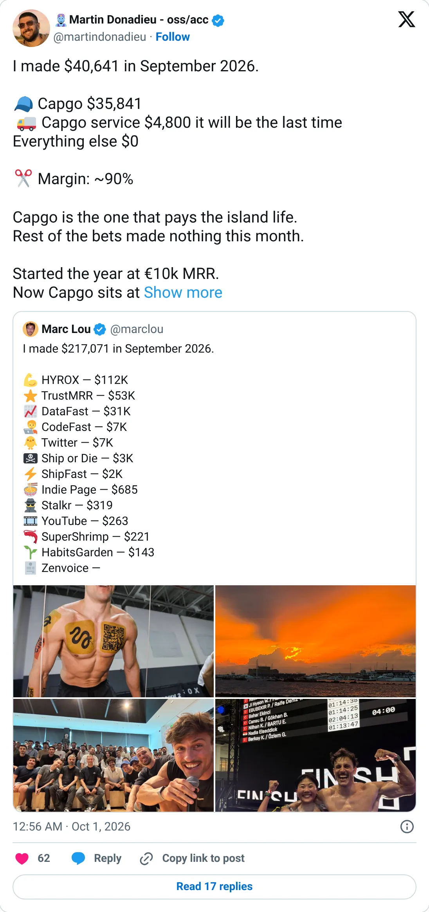

Build this shape
Capgo
The deploy button a popular framework forgot to ship.
$32.1K MRR
Should you build this
A Capacitor app still needs an app-store review to ship a JavaScript fix. Capgo sells the missing button: push the web bundle without waiting. About $32k MRR, open source, after the founder spent years at nothing. Don't clone Capacitor updates if you have never shipped a Capacitor app. Do look for the framework people around you already use, and sell the operational hole it left open.
Cited from the captured posts, shown below: the earliest captured post (Aug 9, 2026) is the source for “Founder: started 2026 at €10K MRR, now €22K / $26K”; the milestone (Sep 10, 2026) is the source for “Founder: "10 years grinding, 7 of them at $0 MRR"”; the latest milestone (Oct 1, 2026) is the source for “Founder: Capgo made $35,841 in Sep 2026”.
Posts this is based on

Founder: started 2026 at €10K MRR, now €22K / $26K
Open on X

Founder: "10 years grinding, 7 of them at $0 MRR"
Open on X

Founder: Capgo made $35,841 in Sep 2026
Open on X
What the product is
Open-source live updates for Capacitor apps: push JS/HTML changes to mobile users without app-store review. Founded Nov 2021 and listed in Estonia. TrustMRR shows 1,156 subscriptions.
Public trail
- $404Verified revenue in Jun 2022 (first month tracked) source
- $1.4KVerified revenue in Jan 2023 source
- $8.8KVerified revenue in Sep 2023 source
- $2.8KVerified revenue in Apr 2024 source
- $6.7KVerified revenue in Nov 2024 source
- $20.1KVerified revenue in Jun 2025 source
- $24.2KVerified revenue in Feb 2026 source
- •Founder: started 2026 at €10K MRR, now €22K / $26K source
- $38.2KVerified revenue in Aug 2026 (peak month) source
- •Founder: "10 years grinding, 7 of them at $0 MRR" source
- •Founder: $30K MRR with zero ads source
- $36.3KVerified revenue in Sep 2026 (latest full month) source
- •Founder: Capgo made $35,841 in Sep 2026 source